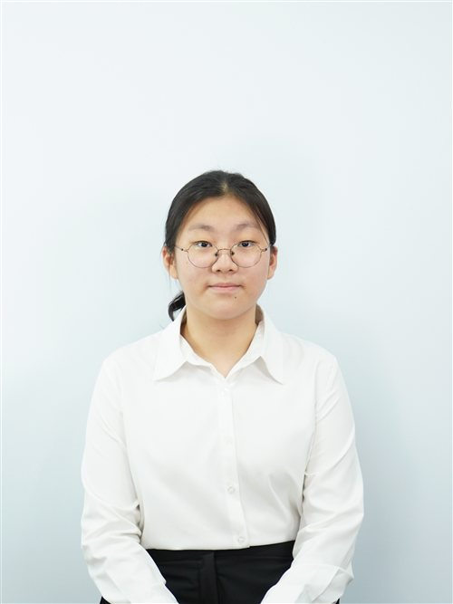
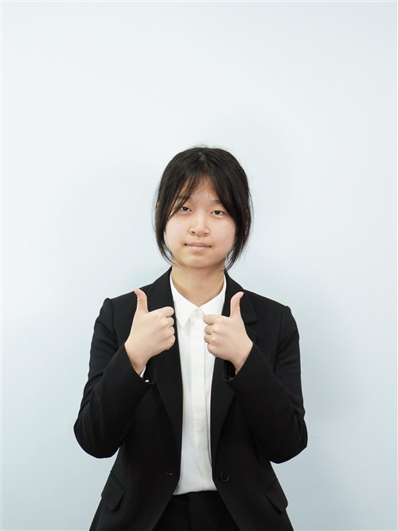

Fellow chairs, honorable delegates, respected directors and staff, I am the Head Chair of the Special Political and Decolonization Committee, Hojeong Ra.
Even in an environment like MUN, where everyone seems so proactive, I am sure you have all, of course myself included, experienced moments where you held back or hesitated to say what was on your mind. We often remain silent wondering, "Will speaking up really make a difference?" or "Won't I just end up worse off for getting involved?" Yet, this silence usually stems not just from a lack of courage, but also from a failure to believe in the value of our own voices. If I may share my secret tip just with you, whenever thoughts about silence grow in your mind, I hope you will keep this one thing in mind: Your values are meaningless if they remain unspoken. Values only truly become values when they are revealed through actions and words.
Every question you ask, every point you raise, and every perspective you share has the potential to move a discussion forward in ways you never expect. What actually matters is that you chose not to let fear speak louder than your own beliefs. And perhaps that is where it all begins. Before we can voice our values, we must first recognize that our voices have value. So the next time you hesitate to raise your placard, ask a question, or share an idea, remember this: voice your value, to let everyone know that you value your voice. Because the discussions that shape tomorrow begin with someone who chooses to speak today.
With distinct voice,
Hojeong Ra
Head Chair of the Special Political and Decolonization Committee
KISMUN 2026

Honorable chairs, distinguished delegates, and fellow staff,
My name is Jiwon Choi, and I will be your Deputy Chair for the Special Political and Decolonization Committee of KISMUN 2026. It is a great honor to have you in this year's KISMUN, and I will do my best to serve you as the chair of this committee.
In this shifting world, it is crucial to keep up with the most recent events—and actions—that happen worldwide, but the most significant part will be the appropriate utilization of your acquired knowledge. During the three-day experience that you will partake in, you will actively communicate with other delegates, write suitable resolutions for your topics, and even get caught up with a heated debate regarding your opinion. This experience will assist you to not only acquire new knowledge, but also share it with others to understand its true value.
Your MUN journey may not always be easy. It can be difficult to speak up on the podium with dozens of eyes upon you, or do a speech that you regretted doing in the first place. However, what differentiates you from being afraid and overcoming your fear depends on your words. Like KISMUN 2026's slogan, "Value your voice, voice your value," your voice is more powerful than you think. Whether you consider it to be "successful" or not, every statement will contribute to your self-growth and qualities as a global citizen. In this year's KISMUN, I highly encourage you to have confidence in yourself, and make your three days a meaningful learning experience. That is all, and I look forward to seeing everyone in November.
Best regards,
Jiwon Choi
Chair of the Special Political and Decolonization Committee
KISMUN 2026